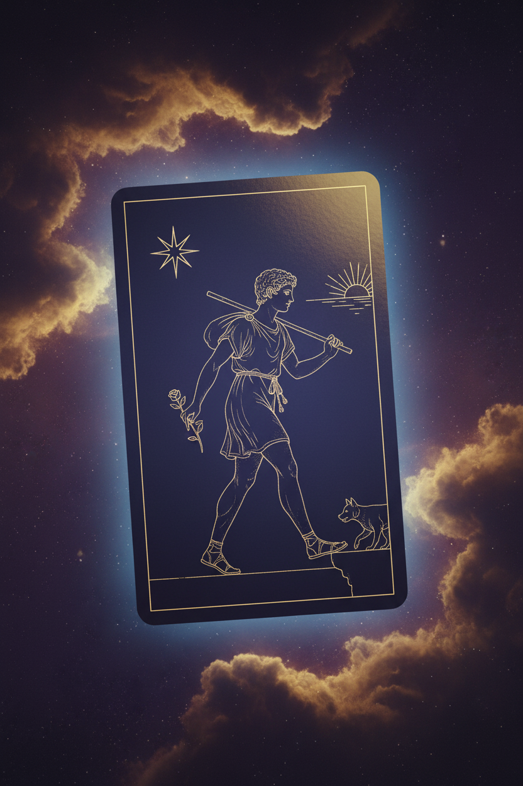
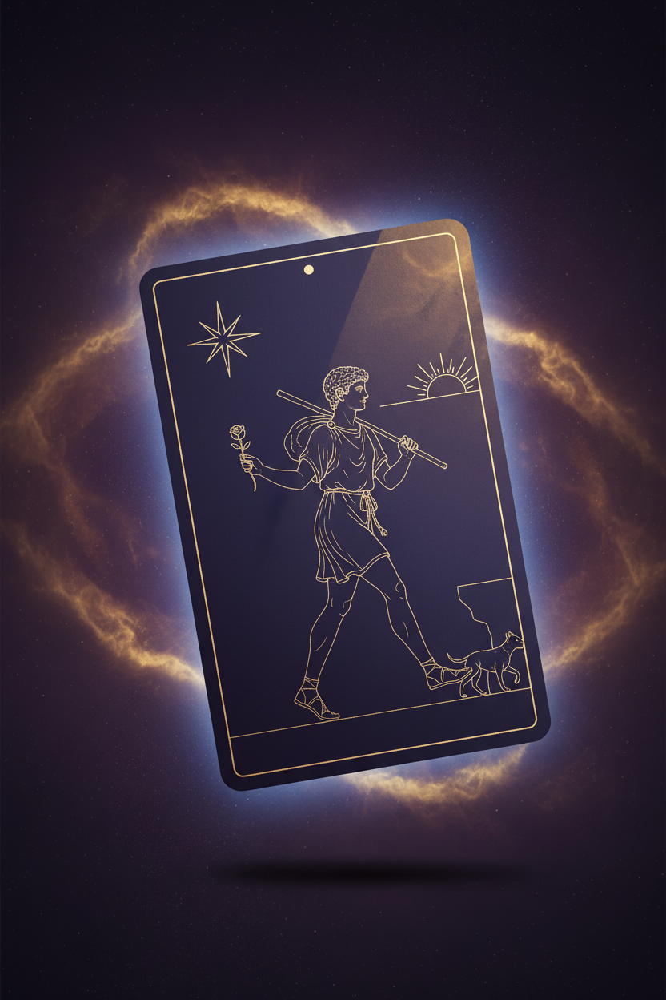
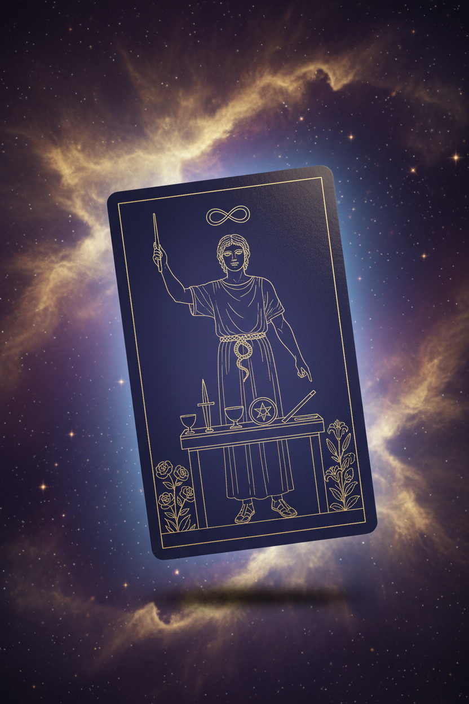
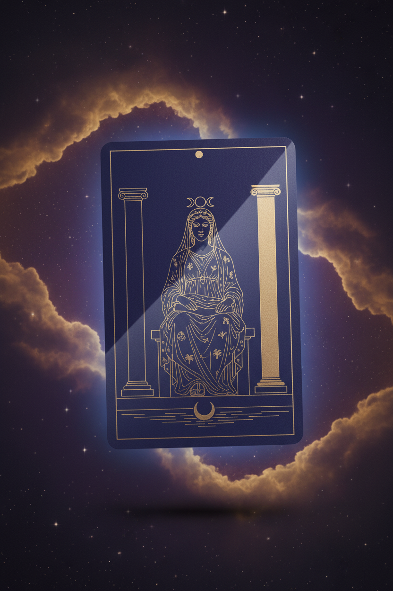
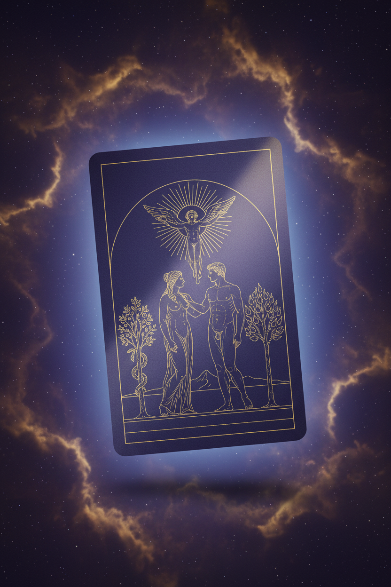
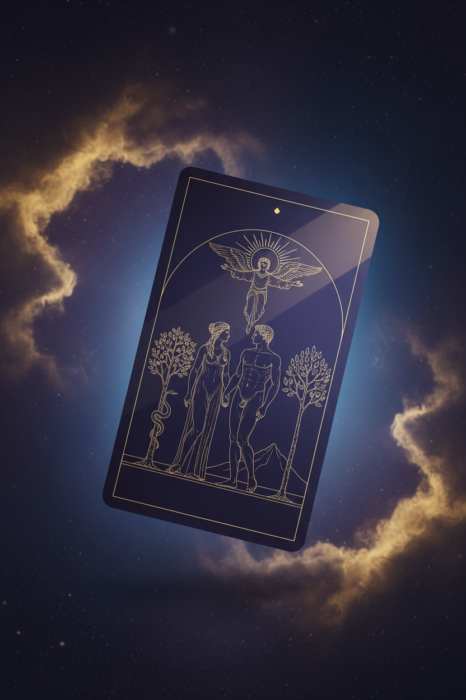

Per tarot-deck/generator/HANDOFF.md pending work: 5 cards had enriched-symbolism prompts updated in prompts.py (Fool gets rose+cliff+star+horizon; Magician gets lemniscate+ouroboros+altar; High Priestess gets pillars+pomegranate veil+triple moon; Lovers gets angel+trees of knowledge/life+mountain; Star gets 1+7 stars + ibis + 5 rivulets). Old minimalist versions from Apr 10 vs new enriched versions regenerated 2026-04-19 02:07–02:13. Goal of this A/B: decide whether to extend enriched symbolism to all 78 cards (~$3 + ~1h) or ship minimalist v2.7 as-is.
Decision criterion for the morning: does the enriched version make the card MORE READABLE as its narrative meaning (educational tarot brand) WITHOUT sacrificing the "luxury emblem" / quiet-center feel that the minimalist v2.7 established? If yes to both on all 5 → extend to all 78 cards. If mixed → cherry-pick which cards get enriched. If no → revert via cp nano_banana_v2_minimalist_backup/* nano_banana_v2/ and ship minimalist.
00 · The Fool
Enriched adds: white rose of purity · cliff edge line · eight-pointed guiding star · rising sun on horizon

OLD · minimalist v2.7Apr 101350 KB

NEW · enriched v2.8tonight1240 KB
01 · The Magician
Enriched adds: infinity lemniscate above head · ouroboros belt · roses+lilies at feet · four-element altar (cup, sword, coin, wand)

OLD · minimalistApr 101365 KB
NEW · enrichedtonight1346 KB
02 · The High Priestess
Enriched adds: dual light/dark pillars · pomegranate-patterned veil · triple-moon crown (waxing/full/waning) · water at feet

OLD · minimalistApr 101319 KB
NEW · enrichedtonight1421 KB
06 · The Lovers
Enriched adds: angel above with spread wings · sun behind angel · tree of knowledge with serpent · tree of life with flame-fruit · mountain peak

OLD · minimalistApr 101375 KB

NEW · enrichedtonight1247 KB
17 · The Star
Enriched adds: one large 8-pointed star + seven smaller 7-pointed stars · ibis bird in tree · water pouring to pool and to earth (5 rivulets)